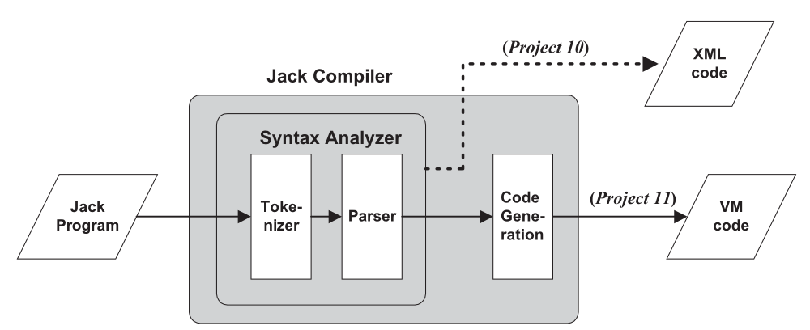
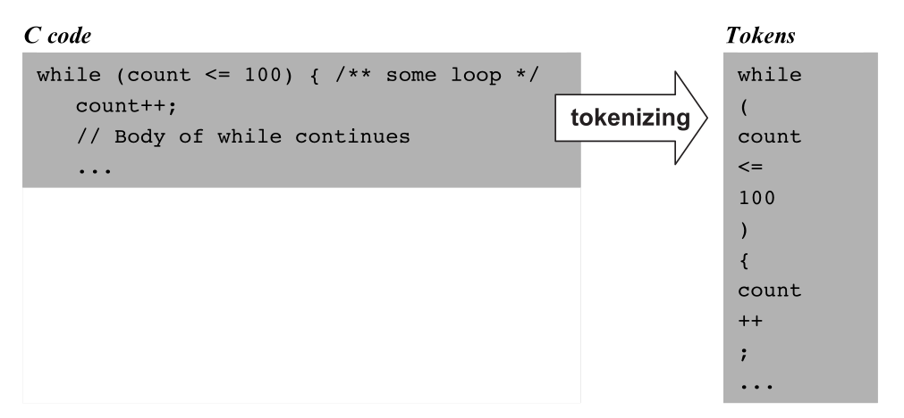

From Source Code to Tokens
The first stage of understanding a Jack program.
What Must a Compiler Do?
Recognize the structure of the source program: classes, declarations, statements, expressions, and terms.
Use that structure to produce an equivalent program in the target language.
This week isolates the first task: understanding the syntax of Jack.
Next: Locate syntax analysis inside the Jack compiler.
The Front End of the Jack Compiler

Project 10: generate XML that exposes the recognized structure. Later: retain the parsing logic and replace XML output with VM code generation.
Recognizing Nested Structure
Humans see the structure of a program almost immediately. A syntax analyzer must discover it explicitly.
while (count < 100) {
let count = count + 1;
}Next: Replace the character stream with meaningful atoms.
Characters Become Tokens

Lexical analysis, also called scanning or tokenizing, groups characters into the language's smallest meaningful units.
Five Token Types
classwhilereturn{+;countMainsum2015332767"Hello world"An identifier may contain letters, digits, and underscores, but it cannot begin with a digit.
Tokenize One Jack Statement
Write the tokens in order and classify each one.
let total = total + 1;What the Tokenizer Ignores—and Preserves
- spaces, tabs, and newlines;
//comments;/* ... */and/** ... */comments.
Everything between the quotes of a string constant—including spaces and punctuation—is its value.
"not // a comment"
Comment removal must therefore respect whether the scanner is currently inside a string.
What Should Survive Tokenization?
let message = "a // b"; // explain the value
let x = 7/* old value */+2;- Is
//inside the string a comment? - Does removing the block comment merge
7and+?
a // b; the second statement tokenizes as let x = 7 + 2 ;.Expose Every Token as XML
if (x < 153) {
let city = "Paris";
}<keyword> if </keyword>
<symbol> ( </symbol>
<identifier> x </identifier>
<symbol> < </symbol>
<integerConstant> 153 </integerConstant>XML reserves <, >, ", and &; output them as <, >, ", and &.
A Small, Testable Interface
hasMoreTokens()Is another token available?advance()Make the next token current.tokenType()Classify the current token.keyWord() / symbol()Return a keyword or symbol value.identifier()Return the identifier text.intVal() / stringVal()Return the constant's value.The value-specific routine is called only when tokenType() reports the matching type.
Classify—or Reject—Each Candidate
classkeywordClassidentifier_count2identifier2countinvalid identifier32767integer constant32768not a valid Jack integer constantA Tokenizer Gives the Parser Better Atoms
A stream of source-code characters.
Ignore layout and comments; recognize five token types.
An ordered token stream that preserves program text, not yet its structure.
From Tokens to Structure
Grammars, parse trees, and recursive descent.
Go to Lecture 29